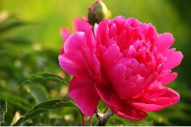
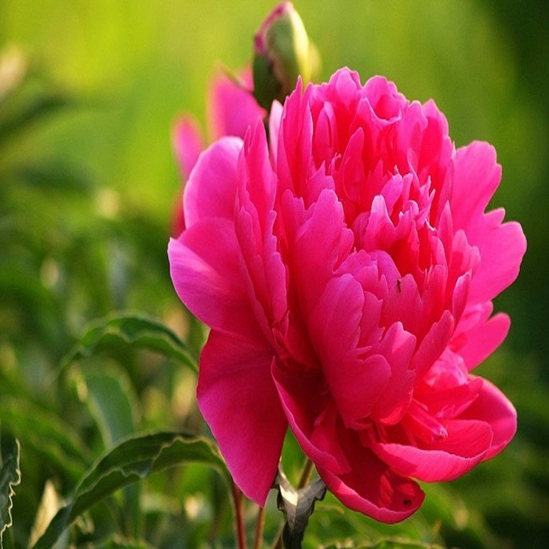
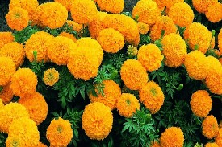

Hoa hồng đỏ


Hoa hồng đỏ: tượng trưng cho một tình yêu nồng cháy và lãng mạn. Hoa hồng đỏ đã có từ rất lâu đời, trải qua nhiều nền văn hóa - cả phương tây và phương đông.Nhưng ở bất kì đâu, nó cũng luôn là loài hoa được yêu thích nhất, và biểu tượng cho một thứ tình cảm vô cùng thiêng liêng: Tình yêu.
Hoa mẫu đơn trắng
 Mẫu đơn trắng không chỉ tinh khôi, thanh khiết, trong trẻo như sương mai mà còn tinh tế, sang trọng. Nó làm trái tim bao cô nàng xao xuyến, say mê mà không thể rời mắt được. Loài hoa này cũng tượng trưng cho sự đẳng cấp, chân thành, hạnh phúc mà ai cũng mong muốn. Chính những điều này đã tạo nên ý nghĩa hoa mẫu đơn trắng rất riêng mà không có loài hoa nào thay thế được.
Hoa vạn thọ
Hoa vạn thọ, có lẽ chỉ cần nghe cái tên thôi thì phần nào mọi người cũng đoán ra được ý nghĩa của chúng rồi đấy. Đây là loài hoa biểu tượng cho sự trường tồn, vĩnh cửu và bất diệt. Trong ngày Tết, chúng còn ẩn chứa ý nghĩa với mong ước bình an cũng như thể hiện lòng hiếu thảo đối với ông bà, cha mẹ.